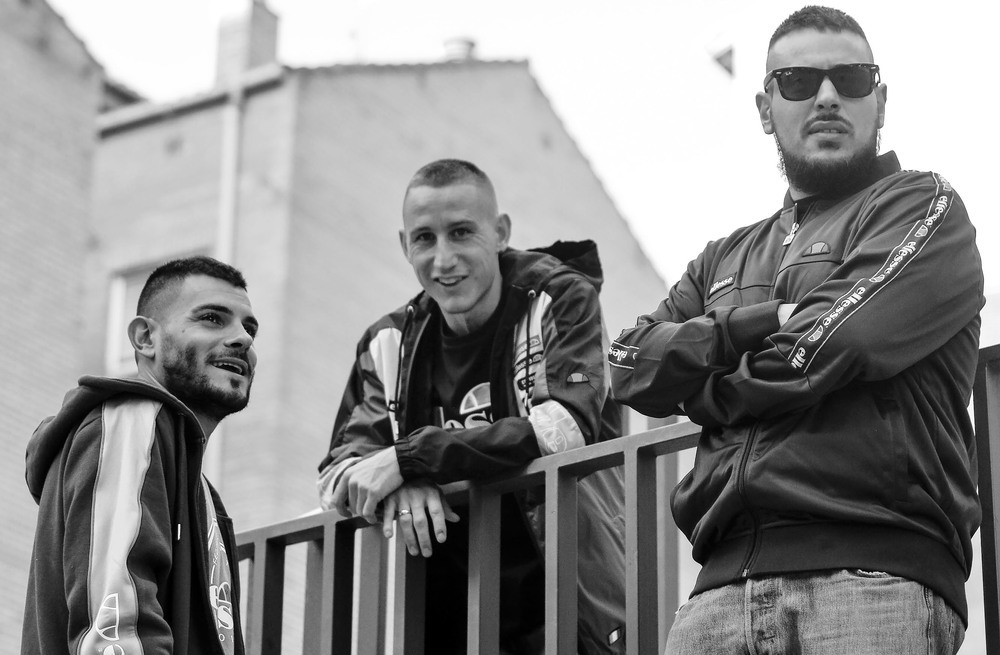

Trayectoria y Estilo:
Orígenes y The Louk: Desde muy joven, Rutty se dedicó al grafiti y a la música,poniendo a su ciudad natal,
Burgos, en el mapa del rap nacional. Formó parte de la mítica agrupación The Louk,
que se ganó un nombre por su enfoque en el rap "real" y la esencia del hip hop de barrio.
Carrera en solitario y con colaboradores: En 2015, formó un trío estable con Rober del Pyro (productor) y DJ Kaef,
lanzando trabajos como "Orígenes" (2015) y "Orígenes Mixtape" (2016), que les permitieron girar por Europa y Latinoamérica.
Estilo musical: Su música se caracteriza por un sonido clásico de "bombo y caja",
con letras crudas que hablan de la vida en el barrio, la lucha social y la autenticidad.
A pesar de los cambios en la música urbana actual, él se ha mantenido fiel a su estilo
y a las batallas que le han acompañado desde sus inicios. Reconocimiento: Se le considera una "leyenda viva" del underground español,
admirado por su sencillez y su dedicación a la cultura del hip hop.
Su trabajo ha servido de inspiración para nuevas generaciones de artistas.
